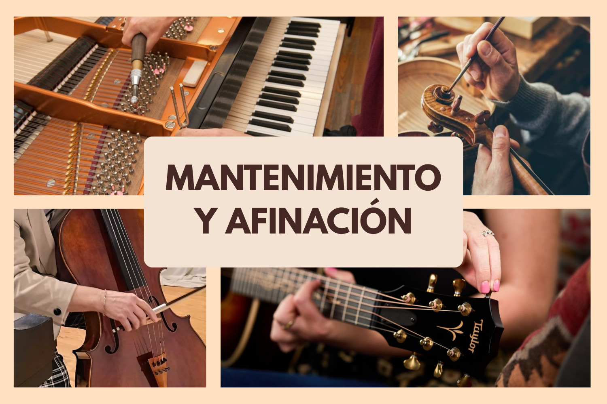

¿Tu violín esta desafinado? ¿Tu guitarra necesita amor? ¿Tu bajo pide a gritos una puesta a punto?
Un mantenimiento y ajuste regular asegura que el instrumento perdure, este listo para la hora del show, el cuerpo del instrumento libre de grietas, preservando así la calidad tonal.
Entendemos lo importante que es mantener tus instrumentos en óptimas condiciones, ya sea para actuaciones en vivo, sesiones de grabación o simplemente para tu propio disfrute musical. Es por eso que contamos con un equipo de luthiers altamente capacitados y experimentados que se especializan en la reparación y restauración de una amplia variedad de instrumentos.
¿Listo para revitalizar tu sonido? ¡Tráenos tu instrumento hoy! Puedes dejar tu amado compañero musical en nuestra sucursal, ¡nosotros nos encargamos!
